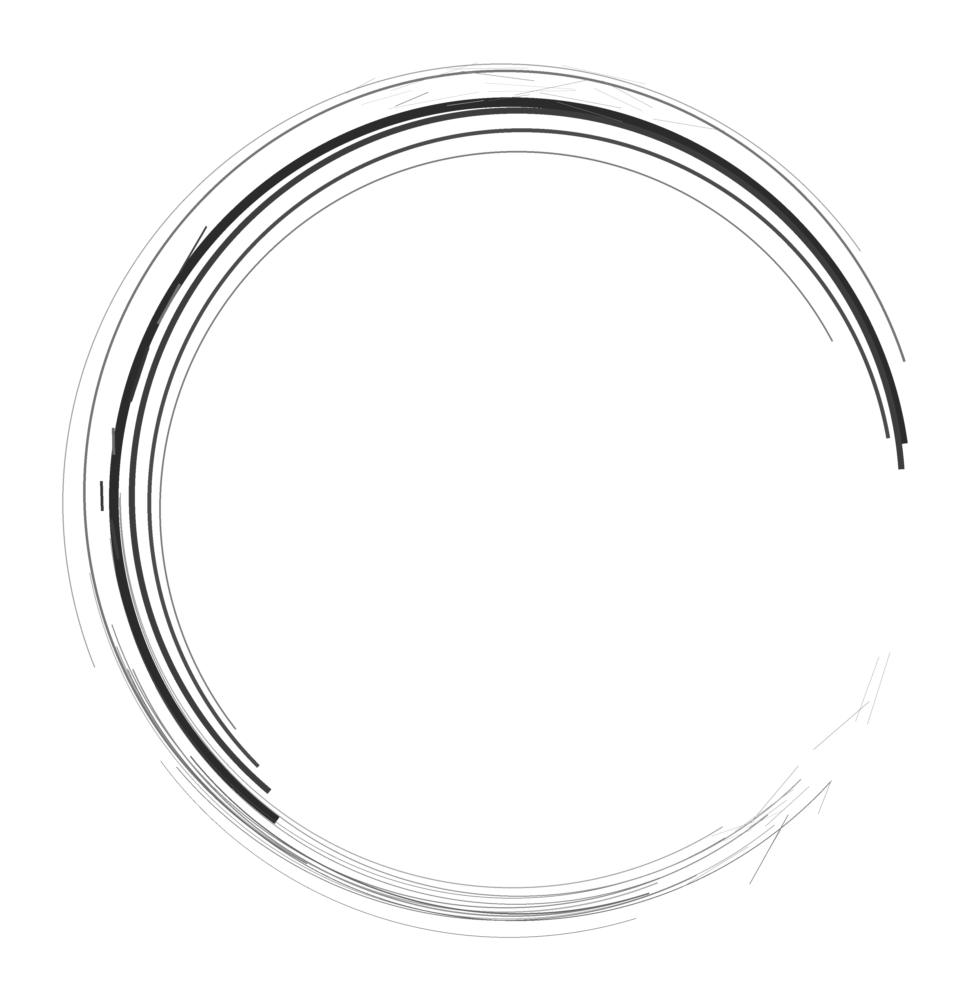

䷁
--

東方顏習社
五行氣質 ・ 舒展駐顏 ・ 形體養修
ORIENTAL VITAL AESTHETICS
东方专属画像
输入生辰，读懂自己的专属气质与色彩。这里会从五行气质、生活节律、面部气韵与日常养修方向，生成一份容易看懂的东方美学画像。这不是给你贴标签，而是陪你更温柔地认识自己。
输入资料，生成免费画像
基础排盘
免费
先看一份自己的气质轮廓
今日小课
每日一卦与今日气象
每天用一分钟，看看今日宜忌、穿搭色与一个可执行的小行动。它不是预测命运，而是帮你把注意力收回来。
今日文句
日柱
宜
忌
节气
今天想先照见哪一面？
开始前，先深呼吸三次。让心安静一点，再看今日给你的气韵提醒。
今日养修短文
每日自动更新，只留今日一篇。
日课日历
查询过去与未来的日子
输入或选择日期，查看当日的日柱、节气、十二值日与吉平慎分类。结果用于生活节律参考，不替代个人择日。
琴音静养
古琴五音与身心安顿
五音入五脏，是传统文化里理解声音、情绪与身体节律的一种方式。这里不做医疗承诺，只提供几首适合静心、睡前放松与整理情绪的古琴曲目。
五音入五脏
- 角属木，传统对应肝，宜疏达、舒展。
- 徵属火，传统对应心，宜明朗、温煦。
- 宫属土，传统对应脾，宜安定、归中。
- 商属金，传统对应肺，宜清肃、收敛。
- 羽属水，传统对应肾，宜沉静、入眠。
建议音量调低，睡前听 10-20 分钟即可；如果越听越精神，就换成更慢、更少起伏的曲目。
以出生之时，观气质之形；以五行之色，照见当下状态。
填写资料后生成预览
免费区会显示四柱、大运流年、日主气质、五行色彩、体质倾向、脸部状态和穿搭提示。
正式使用方式
内测版
免费
填写出生资料后，即时生成四柱排盘、气质底色、五行比例、穿衣色系与日常养护提示。
29元
人工生成详细文字报告：在基础画像之上，细看气色体态、脸部状态、五行穿搭与日常养修方向。
199元
人工详细报告 + 40分钟一对一专属解读：结合你的当下状态，梳理气质定位、形象表达与后续养修路径。